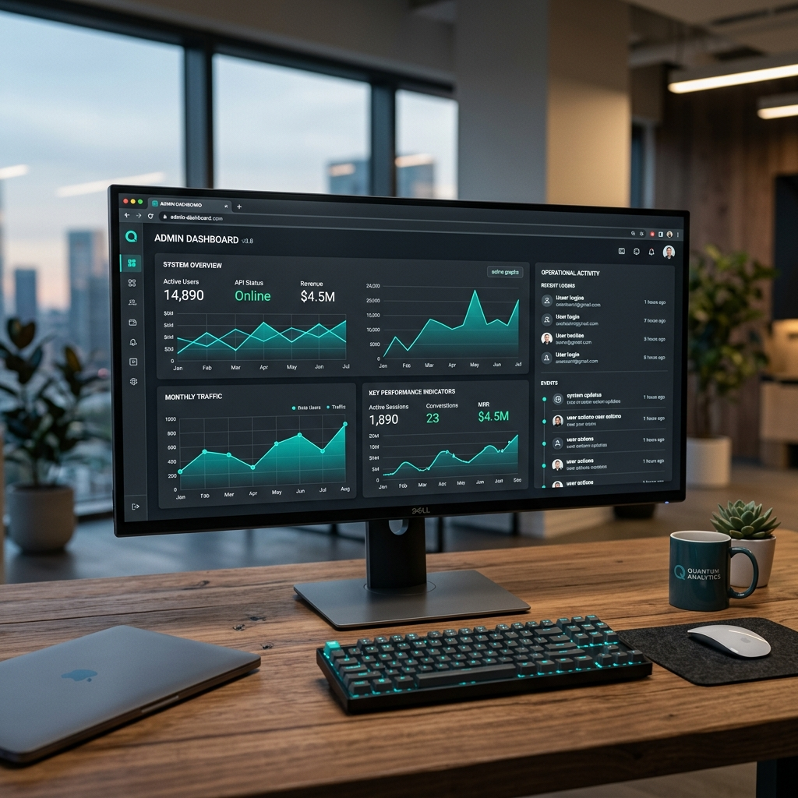
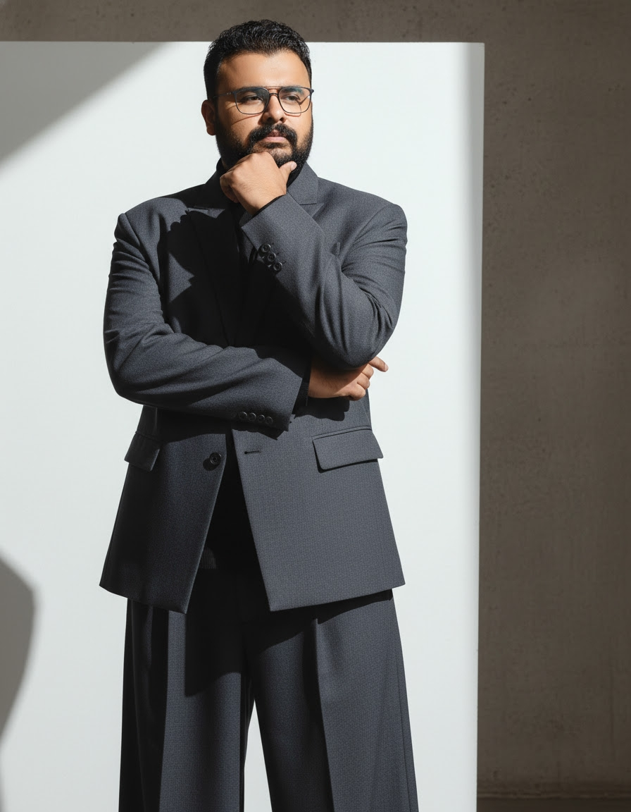
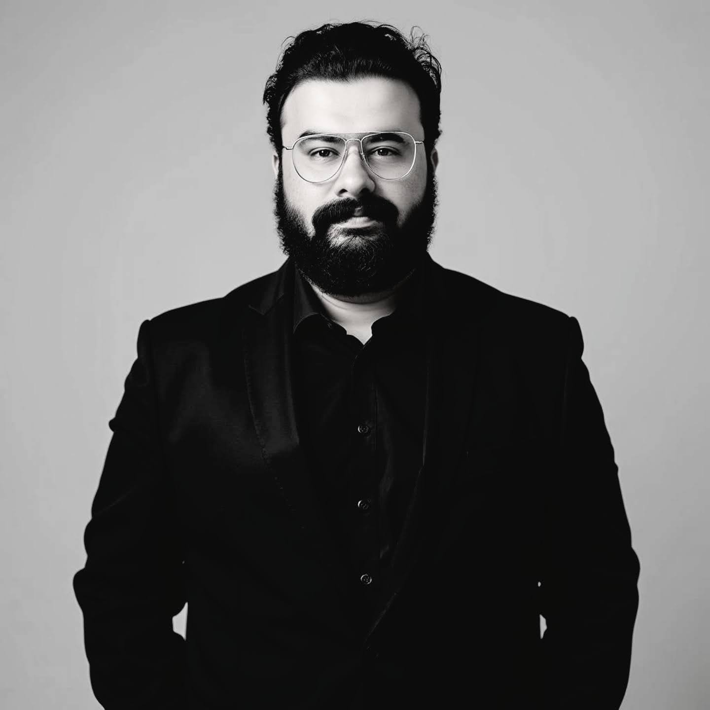
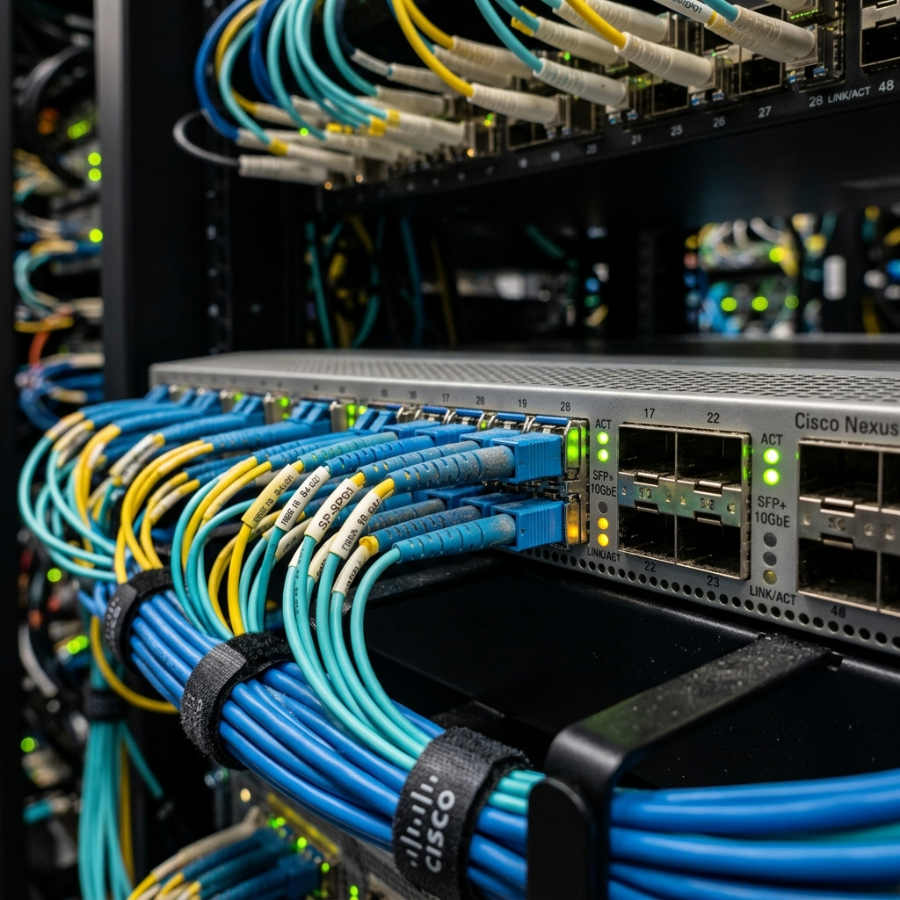

AssetPulse
A next-generation IT asset intelligence platform built for speed and scalability. Centralized hardware and software tracking for 440+ nationwide branches.
Hello, I am Jomy P Jose
I am a dependable Network Engineer and Full-Stack Developer blending robust cloud infrastructure with scalable software development.


.png)

With over 12 years of experience managing enterprise-scale IT infrastructure, I have a proven track record of maintaining 99.9% uptime for cloud-based systems on Oracle OCI and securing nationwide networks.
I am a hybrid technical leader adept at building scalable, intelligent tools like AssetPulse, focusing on bridging the gap between complex network infrastructure and efficient software development.

A next-generation IT asset intelligence platform built for speed and scalability. Centralized hardware and software tracking for 440+ nationwide branches.
Transitioned cooperative systems to Oracle OCI, maintaining a high-availability environment with 99.9% uptime and securing all endpoints via IPsec VPN.

Directed broadband operations for a network of 25,000+ customers, drastically reducing system downtime through proactive maintenance.
Managed Oracle OCI cloud architecture, deployed network security using IPsec VPN & Sophos Firewalls, and launched the AssetPulse tracking application.
Directed broadband operations for 25,000+ customers, reduced downtime by 30%, and led a technical team configuring 60+ managed switches and OLTs.
Engineered full-stack web and desktop applications using Spring and Swing frameworks, and provided guidance for Android development.